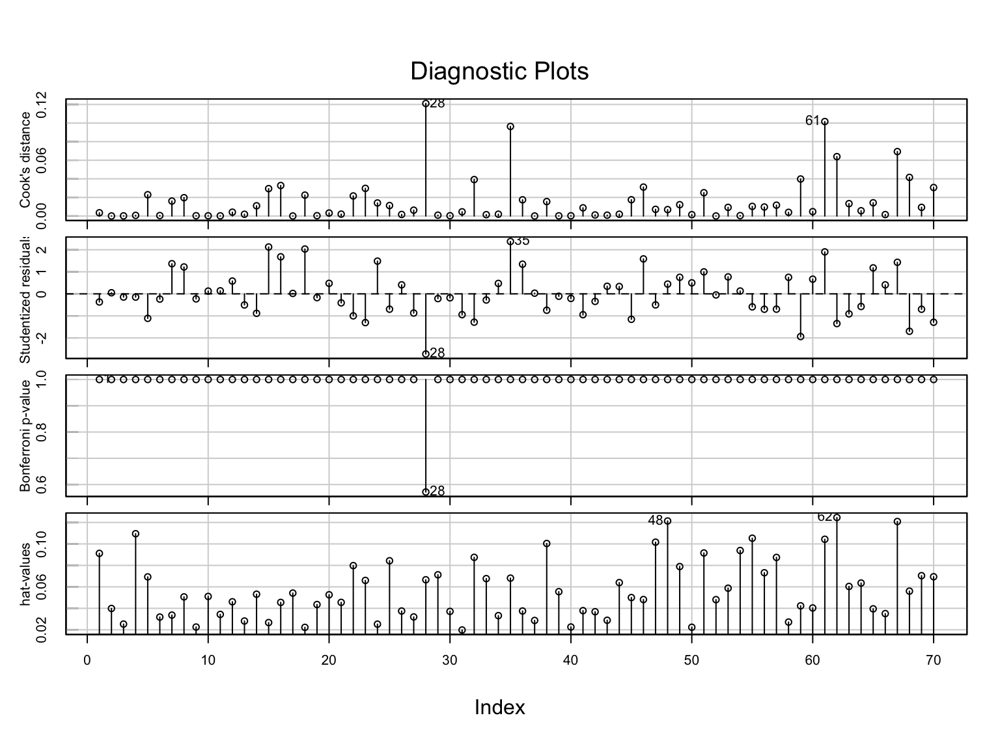

In this set of notes, we will give a brief introduction to empirical diagnostics to detect collinearity. We will use the equal-education-opportunity.csv data provided from Chatterjee & Hadi (2012) to evaluate the availability of equal educational opportunity in public education. The goal of the regression analysis is to examine whether the level of school facilities was an important predictor of student achievement after accounting for the variation in faculty credentials and peer influence.
Residual plots for the model that includes the main effects of faculty credentials, influence of peer groups, and measure of school facilities to predict variation in student achievement.
# Fit the regression model# Index plots of several regression diagnosticsinfluenceIndexPlot(lm.1)

Diagnostic plots for the model that includes the main effects of faculty credentials, influence of peer groups, and measure of school facilities to predict variation in student achievement.
School 28 may be problematic, but removing this observation (work not shown) made little improvement in the residual plots. As such, School 28 was retained in the data. As the assumptions seem reasonably met, we next look to the model-level and coefficient-level output:
20% of the variation in student achievement is explained by the model; which is statistically significant \(F(3, 66)=5.72\); \(p=0.002\).
However, none of the individual coefficients are statistically significant!
This is a bit of a paradox since we rejected the model-level null hypothesis that \(H_0:\beta_{\mathrm{Faculty~Credentials}}=\beta_{\mathrm{Peer~Influence}}=\beta_{\mathrm{School~Facilities}}=0\), yet the coefficient-level results are consistent with \(H_0:\beta_{\mathrm{Faculty~Credentials}}=0\), \(H_0:\beta_{\mathrm{Peer~Influence}}=0\), and \(H_0:\beta_{\mathrm{School~Facilities}}=0\). These inconsistencies between the model- and coefficient-level results are typical when there is collinearity in the model.
What is Collinearity?
Recall from our introduction to matrix algebra that two vectors are collinear if they span the same subspace. In regression, collinearity occurs when any of the columns of the design matrix, X, is a perfect linear combination of the other columns:
and the constants, \(c_1, c_2, c_3,\ldots, c_k\) are not all 0. In this situation, X is not of full column rank, and the \(\mathbf{X}^{\intercal}\mathbf{X}\) matrix is singular.
Effects of Collinearity
If the design matrix is not of full rank, and \(\mathbf{X}^{\intercal}\mathbf{X}\) is singular, then the OLS normal equations do not have a unique solution. Moreover, the sampling variances for the coefficient are all infinitely large. To understand why this is the case, we can examine one formula for the sampling variance of a slope in a multiple regression:
\(R^2_j\) is the squared multiple correlation for the regression of \(X_j\) on the the other predictors;
\(S^2_j\) is the sample variance of predictor \(X_j\) defined by \(S^2_j = \dfrac{\sum(X_{ij}-\bar{X}_j)^2}{n-1}\);
\(\sigma^2_{\epsilon}\) is the variance of the residuals based on regressing \(Y\) on all the \(X\)’s
The first term in this product is referred to as the variance inflation factor (VIF). When one of the predictors is perfectly collinear with the others, the value of \(R^2_j\) is 1 and the VIF is infinity. Thus the sampling variance of \(B_j=\infty\).
Perfect Collinearity in Practice: Model Mis-specification
In practice, it is unlikely that you will have exact (or perfect) collinearity. When it does happen it is often the result of mis-formulating the model (e.g., including dummy variables in the model for all levels of a categorical variable, as well as the intercept). As an example of this, imagine that you were creating the design matrix for a regression model that included occupational status (employed/not employed) to predict some outcome for 5 cases.
Checking the rank of this matrix, we find that this matrix has a rank of 2. Since there are three columns, X is not full column rank; it is rank deficient.
Including all three coefficients in the model results in overparameterization. The simple solution here is to drop one of the predictors from the model. This is why we only include a single dummy variable in a model that includes an intercept for a dichotomous categorical predictor.
# Create vector of outcomesY =c(15, 15, 10, 15, 30)# Create data frame of Y and Xmy_data =cbind(Y, X)my_data
# Coefficients (including all three terms)coef(lm(Y ~1+ employed + not_employed, data = my_data))
If you overparameterize a model with lm(), one or more of the coefficients will not be estimated (the last parameters entered in the model).
Non-Exact Collinearity
It is more likely, in practice, that you will have less-than-perfect collinearity, and that this will have an adverse effect on the computational estimates of the coefficients’ sampling variances. Again, we look toward how the sampling variances for the coefficent’s are computed:
When the predictors are completely independent, all of the columns of the design matrix will be orthogonal and the correlation between \(X_j\) and the other \(X\)s will be 0. In this situation, the VIF is 1 and the second term in the product completely defines the sampling variance. This means that the sampling variance is a function of the model’s residual variance, sample size, and the predictor’s variance—the factors we typically think of affecting the sampling variance of a coefficient.
In cases where the columns in ths design matrix are not perfectly orthogonal, the correlation between \(X_j\) and the other \(X\)s is larger than 0. (Perfect collinearity results in \(R^2_j=1\).) For these situations, the VIF has a value that is greater than 1. When this happens the VIF acts as a multiplier of the second term, inflating the the sampling variance and reducing the precision of the estimate (i.e., increasing the uncertainty).
How much the uncertainty in the estimate increases is a function of how correlated the predictors are. Here we can look at various multiple correlations (\(R_j\)) between \(X_j\) and the predicted values from using the other \(X\)’s to predict \(X_j\).
Impact of various Rj values on the VIF and size of the CI for Bj.
Rj
VIF
CI Factor
0.0
1.00
1.00
0.1
1.01
1.01
0.2
1.04
1.02
0.3
1.10
1.05
0.4
1.19
1.09
0.5
1.33
1.15
0.6
1.56
1.25
0.7
1.96
1.40
0.8
2.78
1.67
0.9
5.26
2.29
1.0
Inf
Inf
For example, a multiple correlation of 0.7 results in a VIF of 1.96, which in turn means that the CI (which is based on the square root of the sampling variance) will increase by a factor of 1.4. This inflation increases the uncertainty of the estimate making it harder to make decisions or understand the effect of \(B_j\).
To sum things up, while perfect collinearity is rare in practice, less-than-perfect collinearity is common. In these cases the VIF will be less than 1, but can still have an adverse effect on the sampling variances; sometimes making them quite large.
Identifying Collinearity
In our case study example, we were alerted to the possible collinearity by finding that the predictors jointly were statistically significant, but that each of the individual predictors were not. Other signs that you may have collinearity problems are:
Large changes in the size of the estimated coefficients when variables are added to the model;
Large changes in the size of the estimated coefficients when an observation is added or deleted;
The signs of the estimated coefficients do not conform to their prior substantively hypothesized directions;
Large SEs on variables that are expected to be important predictors.
Collinearity Diagnostics
We can also empirically diagnose problematic collinearity in the data (D. A. Belsley, 1991; D. Belsley, Kuh, & Welsch, 1980). Before we do, however, it is important that the functional form of the model has been correctly specified. Since, a model needs to be specified before we can estimate coefficients or their sampling variances, and collinearity produces unstable estimates of these estimates, collinearity should only be investigated after the model has been satisfactorily specified.
Below we will explore some of the diagnostic tools available to an applied researcher.
High Correlations among Predictors
Collinearity can sometimes be anticipated by examining the pairwise correlations between the predictors. If the correlation between predictors is large, this might be indicative of collinearity problems.
eeo |>select(faculty, peer, school) |>correlate()
In this example, all three of the predictors are highly correlated with one another. This is likely a good indicator that their may be problems in the estimation of coefficients, inflated standard errors, or both; especially given that the correlations are all very high. Unfortunately the source of collinearity may be due to more than just the simple relationships among the predictors. As such, just examining the pairwise correlations is not enough to detect collinearity (although it is a good first step).
Regress each Predictor on the Other Predictors
Since collinearity is defined as linear dependence within the set of predictors, a better way to diagnose collinearity than just examining the pairwise correlation coefficients is to regress each of the predictors on the remaining predictors and evaluate the \(R^2\) value. If all the \(R^2\) values are close to zero there is no collinearity problems. If one or more of the \(R^2\) values are close to 1, there is a collinearity problem.
# Use faculty as outcome; obtain R2summary(lm(faculty ~1+ peer + school, data = eeo))$r.squared
[1] 0.9733906
# Use faculty as outcome; obtain R2summary(lm(peer ~1+ faculty + school, data = eeo))$r.squared
[1] 0.9669002
# Use faculty as outcome; obtain R2summary(lm(school ~1+ faculty + peer, data = eeo))$r.squared
[1] 0.9879743
All three \(R^2\) values are quite high, which is indicative of collinearity.
One shortcoming with this method of diagnosing collinearity is that when the predictor space is large, you would need to look at the \(R^2\) values from several models. And, while this could be automated in an R function, there are other common methods that allow us to diagnose collinearity.
We will examine three additional common methods statisticians use to empirically detect collinearity: (1) computing variance inflation factors for the coefficients; (2) examining the eigenvalues of the correlation matrix; and (3) examining the condition indices of the correlation matrix.
Variance Inflation Factor (VIF)
Perhaps the most common method applied statisticians use to diagnose collinaerity is to compute and examine variance inflation factors. Recall that the variance inflation factor (VIF) is an indicator of the degree of collinearity, where VIF is:
\[
\mathrm{VIF} = \frac{1}{1 - R^2_j}
\]
The VIF impacts the size of the variance estimates for the regression coefficients, and as such, can be used as a diagnostic of collinearity. In practice, since it is more conventional to use the SE to measure uncertainty, it is typical to use the square root of the VIF as a diagnostic of collinearity in practice. The square root of the VIF expresses the proportional change in the CI for the coefficients. We can use the vif() function from the car package to compute the variance inflation factors for each coefficient.
# VIFvif(lm.1)
faculty peer school
37.58064 30.21166 83.15544
# Square root of VIFsqrt(vif(lm.1))
faculty peer school
6.130305 5.496513 9.118960
The variances (and hence, the standard errors) for all three coefficients are inflated because of collinearity. The SEs for these coefficients are all more than five times as large as they would be if the predictors were independent.
Remember, the VIF can range from 1 (independence among the predictors) to infinity (perfect collinearity). There is not consensus among statisticians about how high the VIF has to be to constitute a problem. Some references cite \(\mathrm{VIF}>10\) as problematic (which increases the size of the CI for the coefficient by a factor of over three); while others cite \(\mathrm{VIF}>4\) as problematic (which increases the size of the CI for the coefficient by a factor of two). As you consider what VIF value to use as an indicator of problematic inflation, it is more important to consider what introducing that much uncertainty would mean in your substantive problem. For example, would you be comfortable with tripling the uncertainty associated with the coefficient? What about doubling it? Once you make that decision, you can determine your VIF cutoff.
There are several situations in which high VIF values are expected and not problematic:
The variables with high VIFs are control variables, and the variables of interest do not have high VIFs. Since we would not be interested in inference around the control variables, high VIF values on those variables would not
The high VIFs are caused by the inclusion of powers or products of other variables. The p-value for a product term is not affected by the multicollinearity. Centering predictors prior to creating the powers or the products will reduce the correlations, but the p-value the products will be exactly the same whether or not you center. Moreover the results for the other effects will be the same in either case indicating that multicollinearity has no adverse consequences.
The variables with high VIFs are indicator (dummy) variables that represent a categorical variable with three or more categories. This is especially true when the reference category used has a small proportion of cases. In this case, p-values for the indicator variables may be high, but the overall test that all indicators have coefficients of zero is unaffected by the high VIFs. And nothing else in the regression is affected. To avoid the high VIF values in this situaton, just choose a reference category with a larger proportion of cases.
Eigenvalues of the Correlation Matrix
A second common method of evaluating collinearity is to compute and evaluate the eigenvalues of the correlation matrix for the predictors. Recall that each square (\(k \times k\)) matrix has a set of k scalars, called eigenvalues (denoted \(\lambda\)) associated with it. These eigenvalues can be arranged in descending order such that,
Because any correlation matrix is a square matrix, we can find a corresponding set of eigenvalues for the correlation matrix. If any of these eigenvalues is exactly equal to zero, it indicates a linear dependence among the variables making up the correlation matrix.
As a diagnostic, rather than looking at the size of all the eigenvalues, we compute the sum of the reciprocals of the eigenvalues:
\[
\sum_{i=1}^k \frac{1}{\lambda_i}
\]
If the predictors are orthogonal to one another (independent) then \(\lambda_i = 1\) and the sum of the reciprocal values will be equal to the number of predictors, \(\sum_{i=1}^k \frac{1}{\lambda_i} = k\).
If the predictors are collinear with one another (dependent) then \(\lambda_i = 0\) and the sum of the reciprocal values will be equal to infinity, \(\sum_{i=1}^k \frac{1}{\lambda_i} = \infty\).
When there is nonperfect collinearity then \(0 < \lambda_i < 1\), and the sum of the reciprocal values will be greater than the number of predictors, \(\sum_{i=1}^k \frac{1}{\lambda_i} > k\).
In an orthogonal matrix, the eigenvalues are all \(\pm1\), but since the correlation matrix is positive semidefinite, the eigenvalues are all \(+1\).
Larger sums of the reciprocal values of the eigenvalues is indicative of higher degrees of collinearity. In practice, we might use some cutoff to indicate when the collinearity is problematic. One such cutoff used is, if the sum is greater than five times the number of predictors, it is a sign of collinearity.
In practice, perfect collinearity is rare, but near perfect collinearity can exist and is indicated when at least one of the eigenvalues is near zero, and is quite a bit smaller than the others.
Using R to Compute the Eigenvalues of the Correlation Matrix
Because collinearity indicates dependence among the predictors, we would want to compute the eigenvalues for the correlation matrix of the predictors (do not include the outcome when computing this matrix). We can then use the eigen() function to compute the eigenvalues of a square matrix.
In previous classes, I have been using the correlate() function from the {corrr} package to produce correlation matrices. This function produces a formatted output that is nice for displaying the correlation matrix, but, because of its formatting, is not truly a matrix object. Instead, we will use the cor() function, which produces a matrix object, to produce the correlation matrix.
# Correlation matrix of predictorsr_xx =cor(eeo[c("faculty", "peer", "school")])r_xx
faculty peer school
faculty 1.0000000 0.9600806 0.9856837
peer 0.9600806 1.0000000 0.9821601
school 0.9856837 0.9821601 1.0000000
Once we have the correlation matrix, we can use the eigen() function to compute the eigenvalues (and eigenvectors) of the inputted correlation matrix.
# Sum of reciprocal of eigenvaluessum(1/eigen(r_xx)$values)
[1] 150.9477
We compare the sum of the reciprocal of the eigenvalues to five times the number of predictors; \(5 \times 3 =15\). Since this sum is greater than 15, we would conclude that there is a collinearity problem for this model.
Condition Indices
A condition number for a matrix and computational task quantifies how sensitive the result is to perturbations in the input data and to roundoff errors made during the solution process. If minor changes to the matrix elements result in large differences in the computation (say of the inverse), we say that the matrix is “ill-conditioned”. It is important to note that a condition number applies not only to a particular matrix, but also to the particular computation being carried out. That is, a matrix can be ill-conditioned for inversion while the eigenvalue problem is well-conditioned.
A third common diagnostic measure of collinearity is to compute the condition number of the correlation matrix of the model predictors. This tells us whether small changes in the data will lead to large changes in regression coefficient estimates. To compute the condition number, we need to compute the condition index for each of the eigenvalues of the correlation matrix based on the model predictors. Each eigenvalue has an associated condition index, and the jth eigenvalue’s condition index is denoted \(\kappa_j\), where,
This value will be larger than 1 since \(\frac{\lambda_\mathrm{Max}}{\lambda_\mathrm{Min}}\) will be greater than 1. In general, the largest eigenvalue will have a condition index of 1 and the other condition indices for every other eigenvalue will be larger than one.
The condition number of the correlation matrix is equivalent to the condition index for the smallest eigenvalue, that is,
If the condition number is small, it indicates that the predictors are not collinear, whereas large condition numbers are evidence supporting collinearity.
From empirical work, a condition number between 10 and 30 indicates the presence of multicollinearity. When the condition number is larger than 30, the multicollinearity is regarded as strong and corrective action will almost surely need to be taken. Below we compute the condition indices and the condition number for our empirical example.
# Sort eigenvalues from largest to smallestlambda =sort(eigen(r_xx)$values, decreasing =TRUE)# View eigenvalueslambda
# Compute condition number directlysqrt(max(lambda) /min(lambda))
[1] 19.25836
The condition number of the correlation matrix, \(\kappa = 19.26\), suggests there is collinearity among the predictors.
Fixing Collinearity in Practice
The presence of collinearity in the predictor space leads to several potential problems, namely that the estimates of the regression coefficients may not be stable (small changes in the data may lead to big changes in the estimates), and that the standard errors/sampling variances are inflated.
Although there are several solutions to “fix” collinearity in practice, none are a magic bullet. Here are three potential fixes:
Re-specify the model
Drop one (or more) of the collinear predictors—This changes what you are controlling for;
Combine collinear predictors;
Biased estimation
Trade small amount of bias for a reduction in coefficient variability;
Introduce prior information about the coefficients
This can be done formally in the analysis (e.g., Bayesian analysis);
It can be used to give a different model specification.
Note that although collinearity is a data problem, the most common fixes in practice are to change the model. In upcoming notes, we will look at methods for combining collinear predictors and performing biased estimation.
For example, we could alleviate the collinearity by dropping any two of the predictors and re-fitting the model with only one predictor. This would fix the problem, but would be unsatisfactory because the resulting model would not allow us to answer the research question.
The highly correlated relationships between the predictors is an inherent characteristic of the data generating process we are studying. This makes it difficult to estimate the individual effects of the predictors. Instead, we could look for underlying causes that would explain the relationships we found among the predictors and perhaps re-formulate the model using these underlying causes.
References
Belsley, D. A. (1991). Conditioning diagnostics, collinearity and weak data in regression. New York: John Wiley & Sons.
Belsley, D., Kuh, E., & Welsch, R. (1980). Regression diagnostics. New York: Wiley.
Chatterjee, S., & Hadi, A. S. (2012). Regression analysis by example. New York: Wiley.